SEMICONDUCTOR DAILY CONTENTS
ABOUT
关于这个项目
About this project
《半导体早午晚报》是我为「东亚制造」做的一套新闻系统。每天北京时间 8、12、20 点，它从 62 个渠道检索东亚半导体新闻，判断哪三件最重要，写成中文短讯，配图、排版，发布到个人网站和 X。
它不是一开始就设计好的。它先是一张自动生成的新闻海报，后来变成我每天挑新闻、改稿、选图、手动发小红书的工作台，再变成手机上点几下就能出刊的半自动流程，最后从 2026 年 10 月 21 日晚报起零点击出刊。
A news system for East Asia Manufacturing. Three times a day it searches 62 channels, decides which three stories matter most, writes, illustrates, lays out and publishes them. It began as one generated poster and became, step by step, a publication that runs without a click.
先保质，再自动
Quality before automation
宁缺毋滥
Skip rather than publish badly
00 四十天Forty days 03 01 起点：一张海报One poster 04 02 换题：为什么是半导体Why semiconductors 05 03 人在环里A human in the loop 06 04 出过的错What went wrong 08 05 把流程画出来Drawing the pipeline 09 06 早午晚报Three editions a day 10 07 转向：半自动是重复劳动The turn 13 08 采集Intake 14 09 报道变成事件From reports to events 16 10 什么叫「重要」What counts as important 17 11 零点击Zero-click 19 12 与 Atlas 的关系Digital Age Atlas 22 13 反思与下一步Reflection 23
02
SEMICONDUCTOR DAILY TIMELINE
从 9 月 9 日第一张新闻海报，到 10 月 21 日晚报零点击出刊。上方是五个阶段，下方是转折点；朱砂标的是出错或被推翻的判断。
From the first generated poster on 9 September to zero-click publishing on 21 October. Phases above, turning points below; vermilion marks errors and overturned judgments.
原型
单条图集 · 人工把关
流程透明
早午晚报 · 半自动
V2 · 零点击
×4
09.09
09.22
10.06
10.13
10.15
10.17
10.19
10.21
第一张新闻海报；转向半导体
第 001 期
030 期事实错误 → 正式稿拦截
日报线撤回；不再追求自动发布
流程图上线
第一期晚报（094）
Telegram 操作台
X 与个人网站自动发
V2 蓝图；39 个源
股价假设被推翻；20:00 起零点击
TESTS · 测试项
每修一个问题，就补一条测试守住它。测试全部离线，用临时目录和假接口，不花钱、不碰真实数据。
0
400
800
722
269
09.09
10.21
SCALE · 比例
10.13 之后的八天放大四倍：后半程的事情最密。
03
SEMICONDUCTOR DAILY ORIGIN
01 / 13 · 2026.09.09
起点：一张海报
It began with one poster
起点是另一件作品 Effects Studio：我为个人网站重写的 56 种图像效果。第一个念头，是把它用在新闻上：程序抓新闻、下载配图，用效果把图「印」进东亚制造的颜色，再套上固定版式。
我没有让模型在 56 种效果里随意挑，而是先收成 6 个「look」，每个都是一组效果、参数、配色和适用题材，写进一份 lookbook。模型只当导演：选哪条新闻、写中文标题、挑哪个 look。像素由程序画。风格因此是稳定的，模型只能在菜单里选。
Fifty-six effects were narrowed to six "looks". A model acted only as director, picking the story, the headline and the look; code drew every pixel.
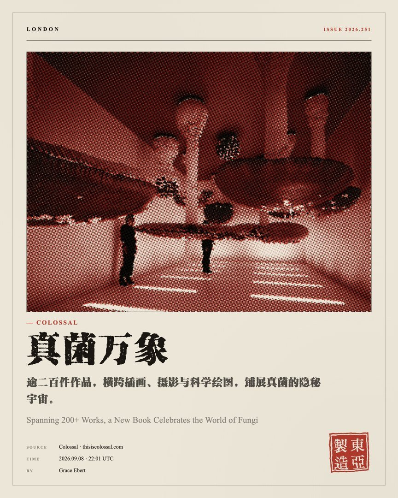
riso-cinnabar 朱砂双墨
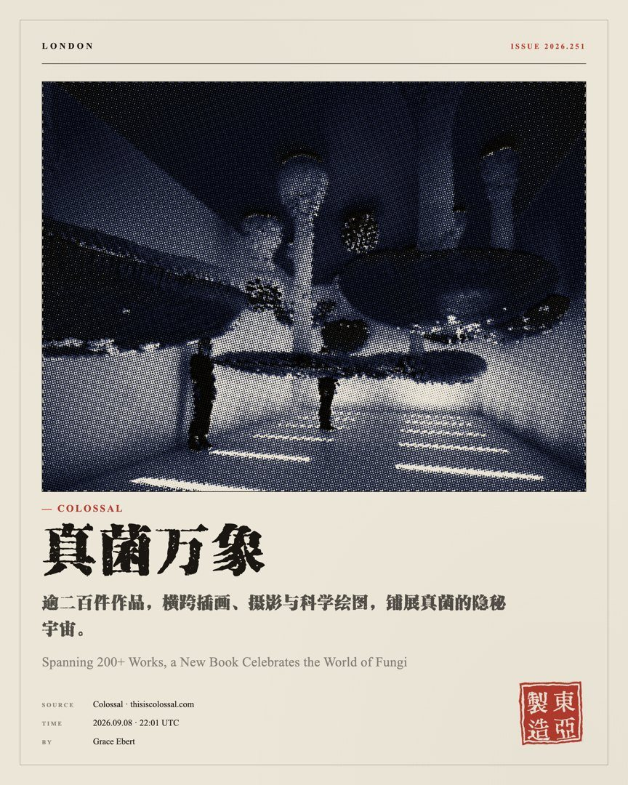
riso-indigo 靛蓝双墨
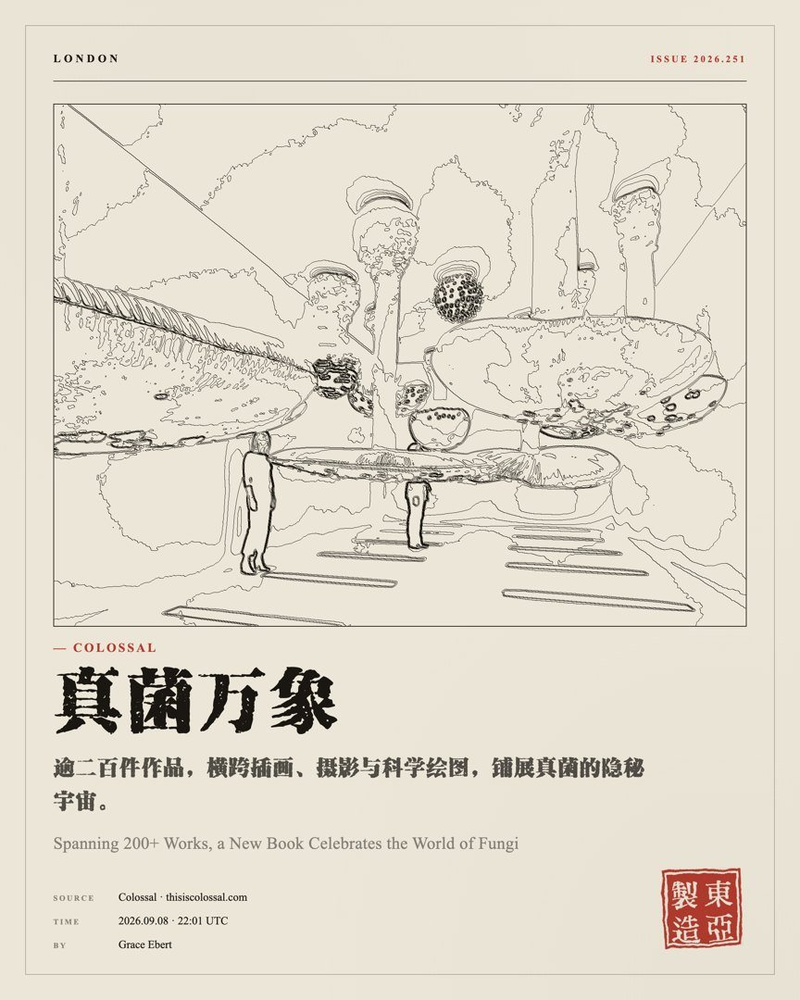
contour-ink 等高墨线
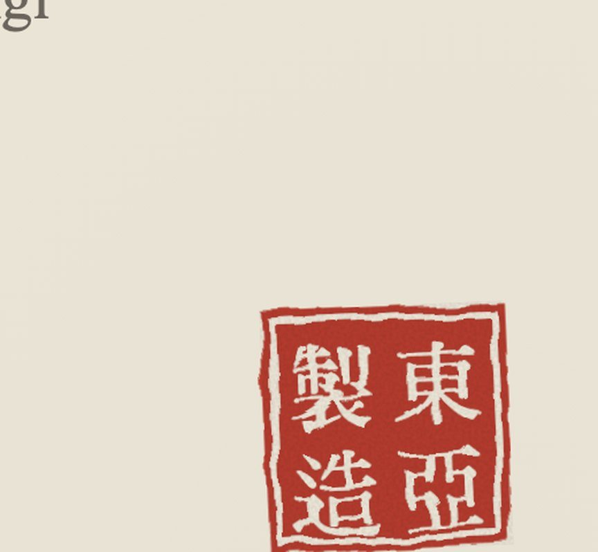
白文印 「东亚制造」只出现在这枚印上The seal is the only signature.
01 · DATA 6 个新闻源
02 · MODEL 选题、中文标题、
03 · CODE 效果引擎把图
04 · CODE 动态裁字、套版式
05 · OUT 2160 × 2700 PNG
04
SEMICONDUCTOR DAILY SUBJECT
02 / 13 · 2026.09.09
换题：为什么是半导体
Why semiconductors
第一批新闻来自艺术与设计媒体。同一天我把题目换成半导体：「东亚制造」对芯片来说是字面意思，世界大部分芯片产能就在东亚。新闻源换成 IEEE Spectrum、EE Times，模型的身份换成半导体产业主编。
问题马上出现：半导体新闻常常没有好图。办法是「艺术史二创」：取大都会博物馆公版的东亚古画做底，叠一层程序画的芯片电路，底部注明出处。
第一版被评价「像论坛帖、像论文报告」。于是标题改成一句说清事件的通讯社式句子，移到图的上方；论文式的来源表格删掉，只留一行出处。
Chip news rarely comes with good pictures, so public-domain East Asian paintings were overlaid with drawn circuits. Called "like a paper", the layout made the headline its subject.
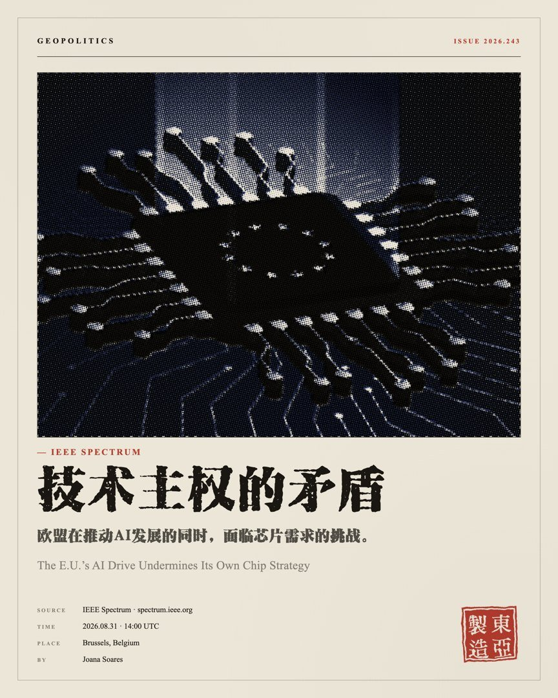
照片版 新闻图经双墨处理，标题在下Photo, headline below
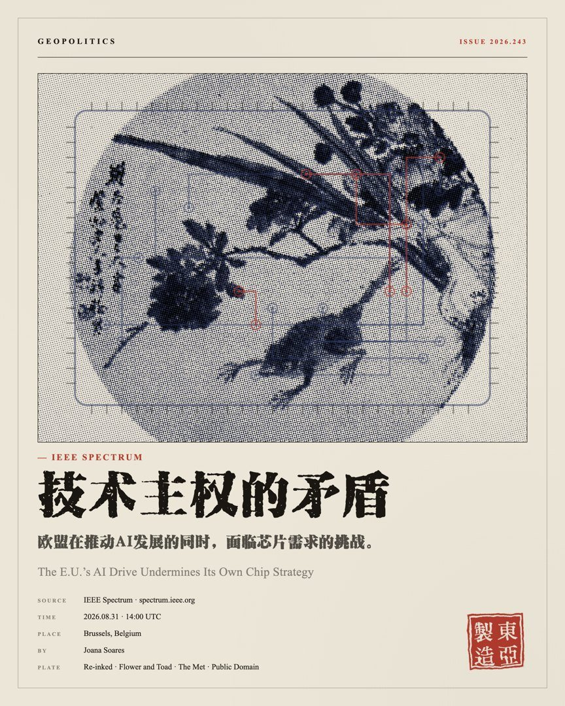
二创版 公版古画 + 程序画的芯片电路Public-domain painting with drawn circuitry
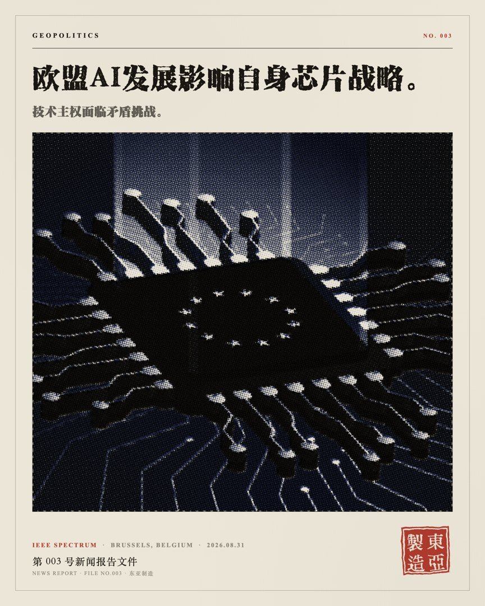
改版 标题当主角，一句话说清事件The headline becomes the subject
05
SEMICONDUCTOR DAILY WORKBENCH
03 / 13 · 2026.09.13 — 10.16
人在环里
A human in the loop
原型一条命令就能出成品，但我决定先不自动化：先把每一步的质量做扎实。于是做了本地工作台，把「抓新闻、研判、写稿、选图、排版、归档、取图」拆开，每一步都看得到、改得了。
人在三处把关：选哪条、决定开不开写、挑图改稿。发布由我在小红书 App 里亲手完成。这一阶段每期只讲一条新闻，从第 001 期做到第 093 期。
Before automating anything, every step was made inspectable. A person chose the story, decided whether to write, and picked images and edited copy; publishing was done by hand.
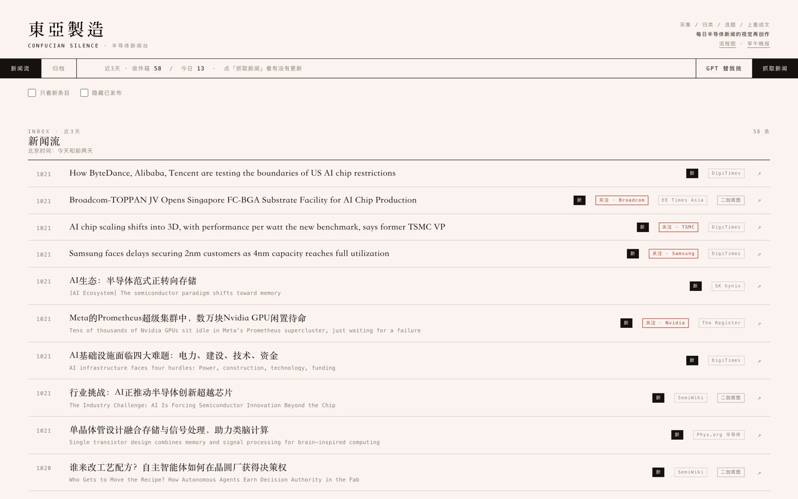
工作台 · 新闻流 近三天的新闻，标出关注的公司和来源；点一条进入研判。The workbench inbox, localhost:8799
CODE 抓新闻
HUMAN 选题
MODEL 研判卡片
HUMAN 决定开写
MODEL 写稿
HUMAN 挑图改稿
CODE 排版归档
HUMAN 手动发布
06
SEMICONDUCTOR DAILY ARCHIVE
03 / 13
八十一张封面
Eighty-one covers
单条图集时期留在归档里的全部封面，第 001 至 093 期（050–061 号因出图失败重试被跳过）。每期 4 到 8 页：封面、图页、文字页、声明。
Every cover from the single-story period, issues 001 to 093, as kept in the archive.
07
SEMICONDUCTOR DAILY ERRORS
04 / 13
出过的错
What went wrong
每一个错都写进工作日志：哪天、为什么、怎么改、怎么验证。改法尽量变成规则或测试，让同样的错不会再出现第二次。
Each failure is logged with its date, cause, fix and check, and the fix becomes a rule or a test.
WORKLOG.md
DATE WHAT HAPPENED · 发生了什么 WHAT CHANGED · 改了什么
09.18
第 030 期写错了事实 把「材料不够」写成了「原文没有披露」，还把排除无关报道的内部过程写进了正文。原报道其实提到可能租赁或合资，海力士官方说没有最终决定。
对外文字出口加检查 写稿、出图、定稿、文案四个出口拦下内部过程话术；研判只读主报道正文，材料太薄就不让开写。更正稿另存，原期不改。
10.13
日报线全部撤回 想把每日简报排成对外日报，封面改了六七版都不满意，当晚把当天的改动全部撤回。
两条规则 封面只能有一个主角；识别物不能丢。以后改封面先拿参考、按骨架出一两版。
10.16
测试删掉了我的候选图 三项新测试没有换到临时目录，每跑一次全套测试，就清空一次真实的候选图。
测试一律隔离 测试在临时目录里跑，用放在真实目录的诱饵图验证没被删；一张图都没拿到时，不再清理上一轮。
10.20
午报被标成早报 第 108 期：中午的推送因代理超时错过了窗口，网页加载旧草稿时又把刊次改回早报。
刊次跟着时段走 补推放宽到 90 分钟；已出过图的草稿不再决定新一期的刊次。第 108 期按原期号重出。
10.21
模型余额用完 两天的验收重跑花光了 OpenAI 余额，午报卡在写稿之前。
换模型、设上限 全部换成 DeepSeek，V2 每天花费上限 $0.50；大量重跑之前先说预计花费。
08
SEMICONDUCTOR DAILY PIPELINE
05 / 13 · 2026.10.14
把流程画出来
Drawing the pipeline
朋友建议把流程搬到扣子那类拖线平台。我的判断是：那只是平移，还会丢掉最难替代的出图部分。所以不迁，而是把现有流程画出来，做成 TouchDesigner 那样的节点网络。
原则是「图即代码」：图上每个节点对应一个真实函数，测试会扫描全部模型调用点，与图逐一比对；耗时、失败和用量来自真实运行记录。点开模型节点能看提示词全文，改写后用上一次的真实输入试跑，前后并排对比。
Every node maps to a real function, enforced by a test that scans every model call. Prompts can be read, edited and replayed against the last real input.
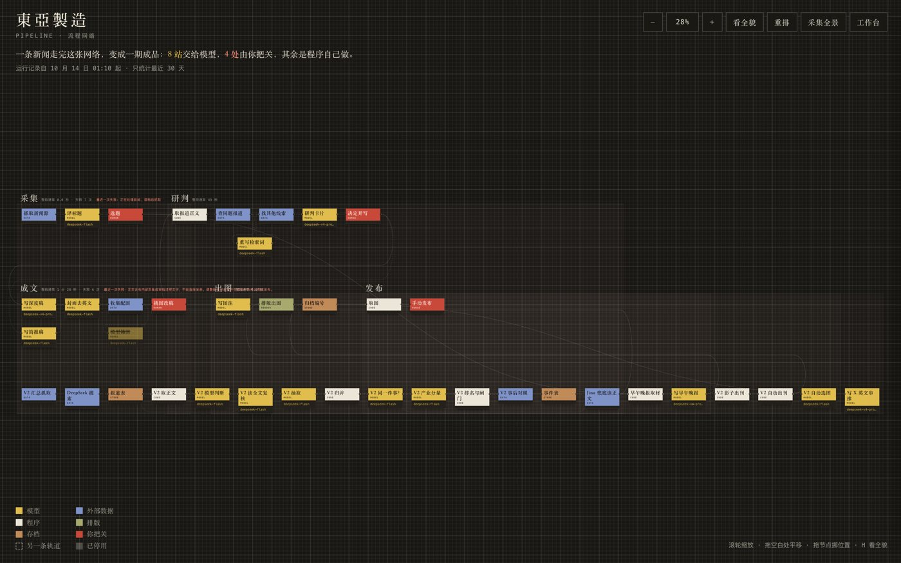
/pipeline · 节点网络 黄：模型 蓝：外部数据 白：程序 红：人工把关 绿：排版 赭：存档。下方一排虚框是 V2 的新节点。Live node graph with run logs; the dashed row is the V2 track.
09
SEMICONDUCTOR DAILY ONE ISSUE
06 / 13 · 2026.10.16
一期八页
One issue, eight pages
骨架参考了小红书上的「半导体早报」：刊名和日期最大，一条色带列三则，下面是图。我嫌它太下沉，换成东亚制造的语言：书法刊名、匾额标志、干支纪日。
内页参照宽和八点半：每则两页，一页原图不加效果，一页正文两三段沉到页底。走量不等于草率，形式固定，每天的差别只来自新闻。
01封面
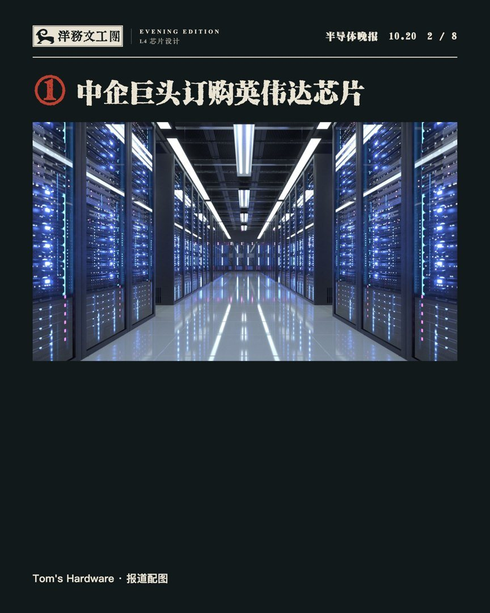
02① 图
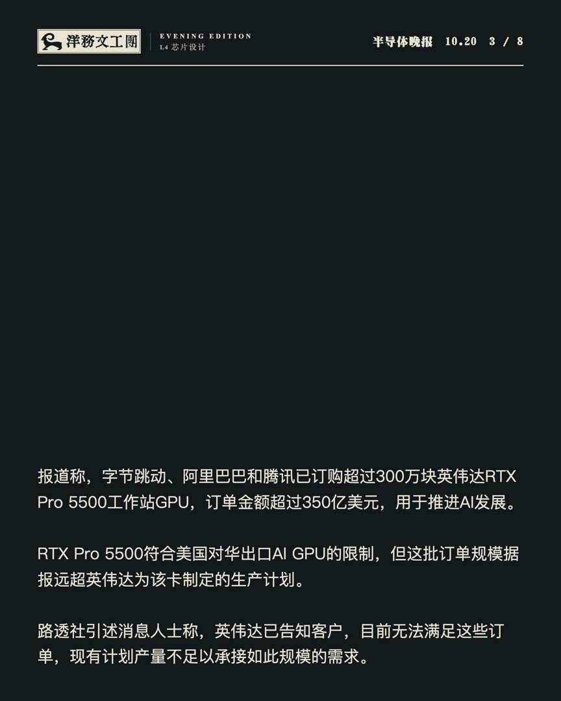
03① 文
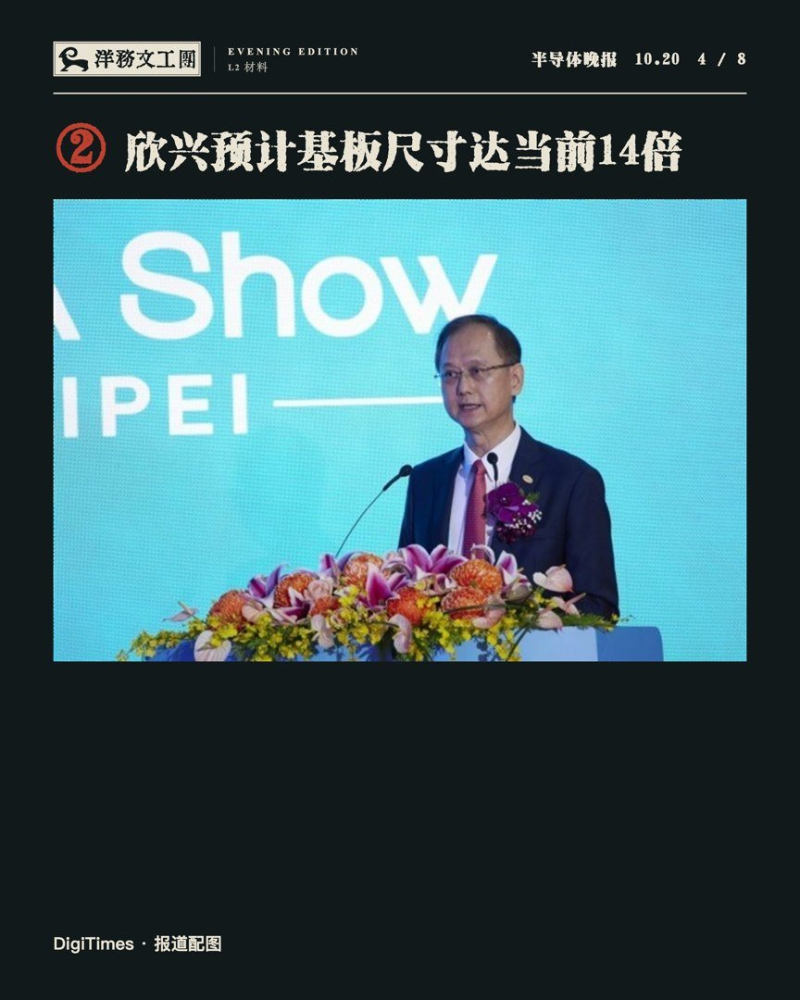
04② 图
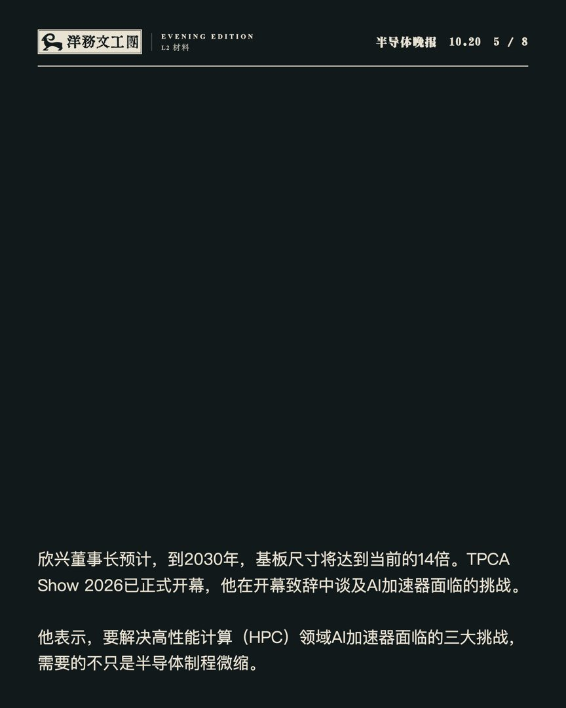
05② 文
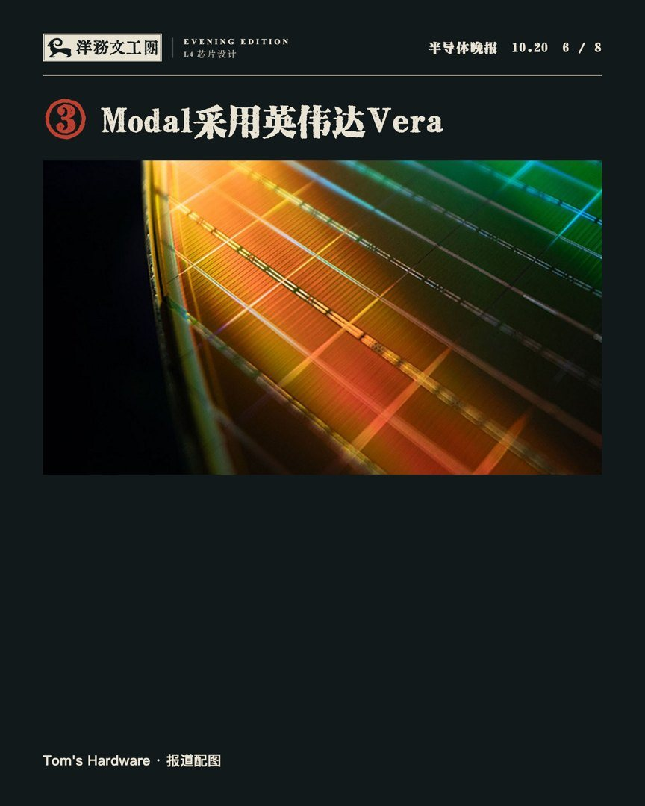
06③ 图
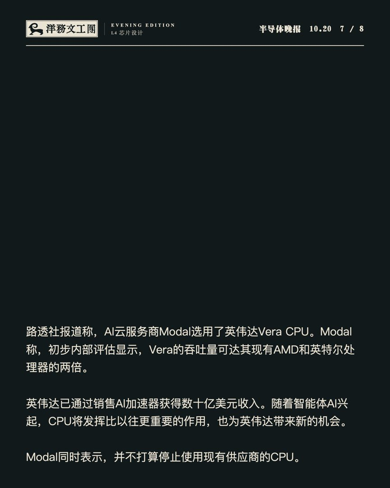
07③ 文
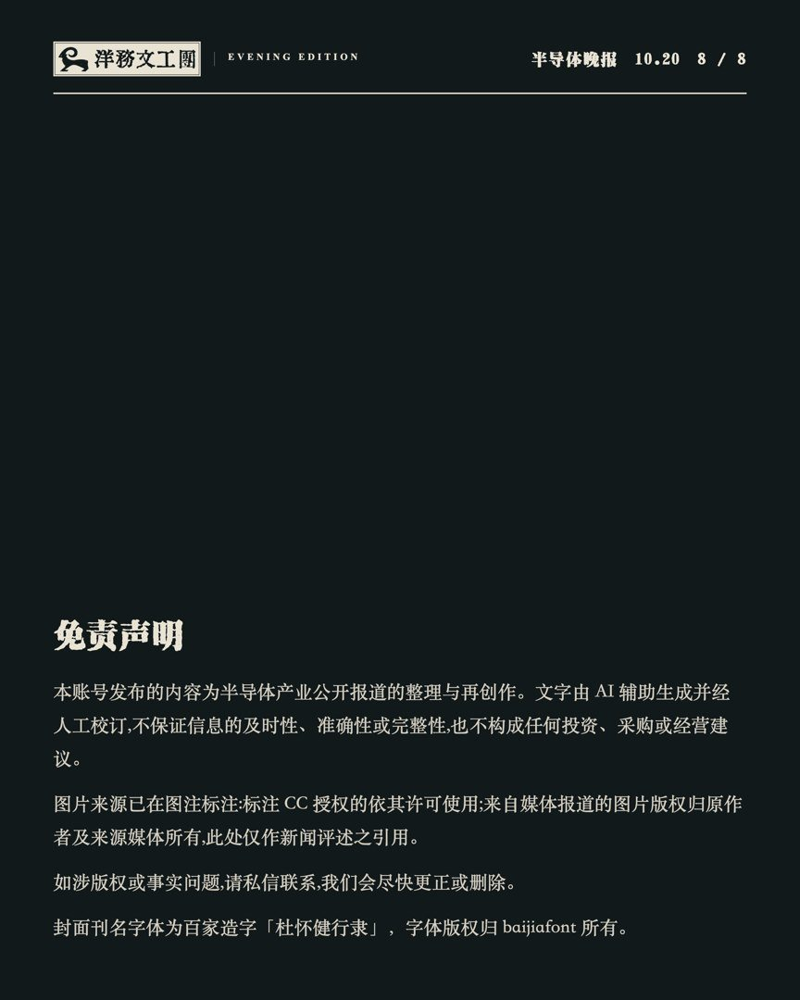
08声明
EDITIONS · 三个刊次
早报 08:00 白底石青色带，午报 12:00 白底金色带，晚报 20:00 反转为玄墨底、彩色原图。一排封面里，早晚一眼可辨。
WRITING · 写法
每则一个 10–16 字的短标题，正文按「发生了什么 → 背景 → 回应与影响」写，当事方的回应必须写进去；写完逐个核对数字。
SOURCES · 取材
只读公开可见的正文：付费墙后、标了隐藏的段落一律不取。每张图标注来源。
11
SEMICONDUCTOR DAILY DISTRIBUTION
06 / 13 · 2026.10.17 — 10.19
发出去
Getting it out
为了在手机上就能出刊，我做了 Telegram 操作台：到点推 8 条新闻，点三条、选图、出图，成品发回手机。
X 只走官方接口，每期另出一套英文版图。整串不放链接：X 按条计费，带链接一条 $0.20，不带 $0.015。发之前程序核对：每条不超过 280 字、没有链接、英文里的每个数字都能在中文稿里找到，过不了就不发。
个人网站的新闻页每期一行标题、一排页图，只留两天。
An English set goes to X through the official API, with no links (a link costs $0.20 a post, none costs $0.015), and every figure is checked against the Chinese copy first.
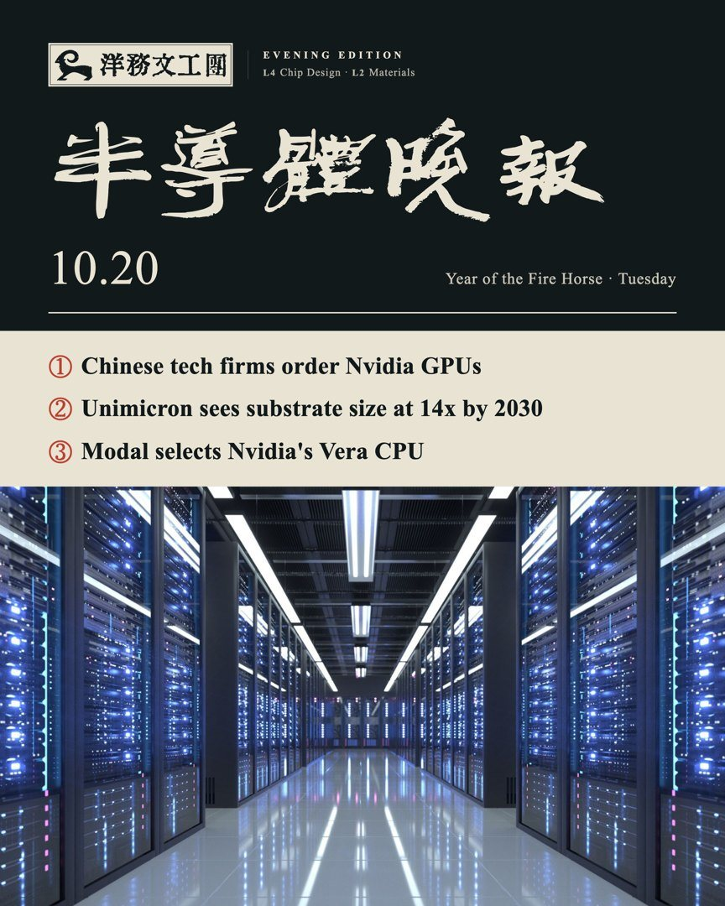
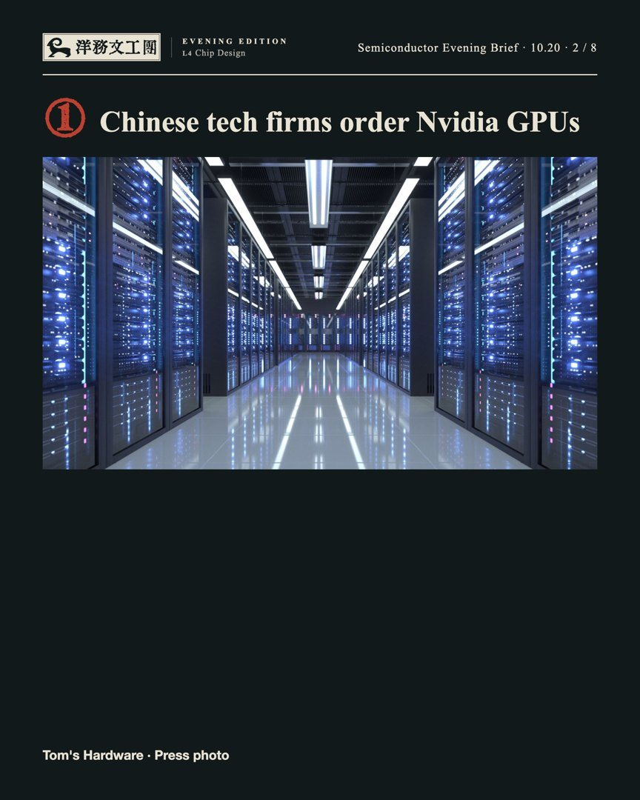
X · 英文版 主帖是英文封面加三行标题，每则一条回复：这则的图页加两三句，注明来源。Lead post and first reply, issue 109
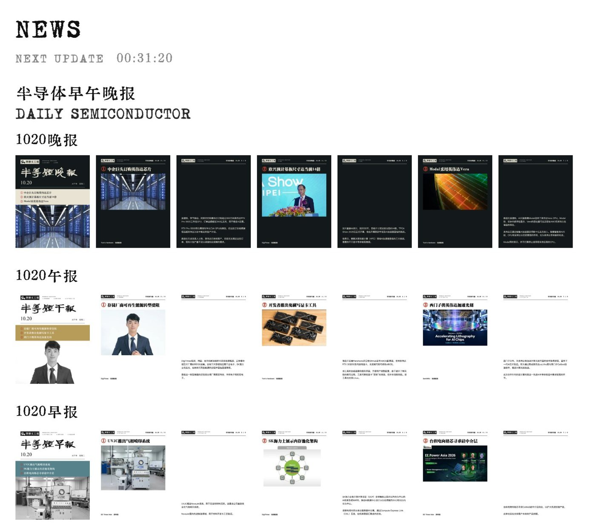
yihuang.art/news 每期一行标题、一排页图，两日内。The daily column on the personal website
12
SEMICONDUCTOR DAILY THE TURN
07 / 13 · 2026.10.20
转向：半自动是重复劳动
Semi-automatic was still busywork
每天点 Telegram 挑新闻、选图，再手动发小红书，是重复的无用功；内容也只是二手转述。我停了下来，重新问：这套系统真正的价值在哪？
答案不在海报，在检索与整合：把每天的报道归并成一件件事，挂上公司，理清公司之间的关系。海报只是它的一个出口。
The value was never the poster. It is in gathering and merging reports into events, linked to companies and the relations between them.
docs/V2-PLAN.md
零点击
Zero-click
日更全自动，Telegram 只发通知。
只走官方接口
Official APIs only
个人网站和 X；没有接口的平台不日更。
宁缺毋滥
Skip, don't fake
质量闸门不过，整期跳过。
透明
Visible
每一步都是图上的节点，看得到代码和数据。
影子模式
Shadow mode
新系统先并行跑、只写库不发布，对照过关再切换。
V2 · SEVEN STAGES · 七段
01 采集 一手、东亚本地、行业媒体
02 理解 抽公司、并成事件
03 判断 重要性与质量闸门
04 入库 事件库、候选关系
05 成文 写稿、数字核对
06 出图 选图、渲染中英版
07 发布 网站、X
FROM PLAN TO ZERO-CLICK · 从蓝图到零点击，约 26 小时（提交时间）
10.20 18:25 V2 蓝图
22:02 采集进报道表
10.21 02:20 报道并成事件
03:21 第一版排名
13:29 编辑标准取代股价
14:28 影子出刊
15:31 自动出刊上线
20:00 第一期零点击晚报
13
SEMICONDUCTOR DAILY SOURCES
08 / 13 · 2026.10.20
新闻源体检
A health check of the sources
内容质量的瓶颈在原料。实测约 90 个候选源后发现：原有的 16 个英文源里约 6 个实际已经失效；关键词表里没有韩文「반도체」和日文「半導体」，日韩文的报道一条都过不了筛。
新的采集读三类来源：39 个新闻网站（按一手、东亚本地、行业分级），台湾证交所每日重大讯息，以及每天四轮、23 条查询的 DeepSeek 搜索（官网、政府、日韩中英）。正文读不到时，用 Jina Reader 读同一个公开页面；付费墙一律不碰。
Of 16 English feeds, about 6 had silently died, and Korean or Japanese reports could never pass the keyword filter.
BEFORE · 10.20 体检时
16 个英文 RSS，每个只看前 3 条
≈6 个实际失效：连不上、7 天 0 条、报错、停更、取不到正文
0 条日文、韩文报道能过筛
158 条过筛（当天能抓到约 975 条）
— 关键词打分，标题前 48 字去重，没有数据库
AFTER · V2 第一轮
39 个新闻网站，8 路并发，一轮约 22 秒
38 个抓到（1 个超时）
+2 台湾证交所公告（官方原文当正文）· DeepSeek 23 条查询
≈250 条够分（24 小时入库约 1,100 条，含日文、韩文）
1 张报道表：同一网址只存一次，记来路、语言、正文取得方式
14
SEMICONDUCTOR DAILY INTAKE
08 / 13
从两千篇到三件事
From two thousand reports to three stories
抓回来的报道先由模型判断是不是半导体新闻，再把同一件事的多篇报道并成一件，过质量闸门后按编辑标准排序，前三件上封面。每一层都在采集全景页上看得见，点开就是真实的报道。
透明有用：漏斗页上线当天就暴露出关键词的漏判，「美光桃园厂工会罢工」只得 1 分没被留下。于是改成由模型判断。
The funnel page exposed a miss on its first day: a strike at Micron's Taoyuan fab scored 1 and was dropped by keywords. Triage moved to a model.
snapshot 2026.10.21 16:20 · last 24 h
2,356
抓回来的报道
reports fetched in 24 hours
62 个渠道 · 同一网址只存一次
1,382
模型读过标题
titles read by a model
当天花费到上限，974 条排队
166
是半导体新闻
judged to be semiconductor news
两道关：先看标题，再读正文开头复核
122
并成一件件事
merged into events
17 件不止一家在报
20
过了质量闸门
passed the quality gates
两家在报或一手来源 · 数字对得上 · 有公开正文
3
上封面
make the cover
按编辑标准排序取前 3
15
SEMICONDUCTOR DAILY EVENTS
09 / 13 · 2026.10.21
报道变成事件
From reports to events
进入排名之前，我要求先确认质量稳定。方法是人工标注 49 条最难判的报道做标准答案，每改一次就从头重跑当天的 1,290 条，再抽查随机样本、数字和多篇组成的事件。三个问题，三次修正：
Before ranking, quality had to be stable: 49 hand-labelled hard cases as an answer key, and a full rerun of the day's 1,290 reports after every change.
01 · 判断
25% → 5%
随机抽查中不该留下的比例
问题 只看标题判不稳：放宽会放进来，收紧会漏掉。
修正 两道关：第一道只看标题，拿不准就放；第二道单独问「主角是不是半导体」，读标题和正文开头。个股行情页之类用规则在采集时直接丢。
02 · 数字
6 → 0 / 217
摘要里对不上原文的数字
问题 小模型把「X billion」系统性地写成「X 亿」，少乘了 10，重抽也改不对。
修正 送进模型之前，先把英文量级换成中文写法（2 billion → 20亿），模型照抄即可。之后 217 篇的数字全部对上。
03 · 归并
0.57
同一件事，中英文标题直接比的相似度
问题 同一件事的中英文报道，直接比标题像是两件事。
修正 先统一写成一句中文摘要再比。用已归并的数据校准门槛：不同的事 4,000 对里只有 0.07% 超过 0.25，「同一件」的门槛定在 0.30。
RESULT · 当天
1,290 条 → 第一道放进约 250 → 复核留下 220 → 并成 174 件事
16
SEMICONDUCTOR DAILY JUDGMENT
10 / 13 · 2026.10.21
什么叫「重要」
What counts as important
每期只放三件事。系统一天读两千多篇报道，要先回答：哪一件最值得讲？我的第一个答案是「会让股价动的」。拿真实收盘价一对，排名和股价几乎无关：相关系数只有 0.15。
The first answer was "whatever moves the stock". Checked against real closing prices, rank and price barely related: a correlation of 0.15.
rank.py · market.py
V1 · 假设
重要 = 股价会动 模型以分析师口吻打四项：意外、冲击、公司分量、波及面。
TEST · 推翻
r = 0.15 排第一的台积电高雄厂意外，台积电 ADR 当天只涨 1.16%；排名不高的臻鼎盘中涨 6%。
V2 · 修正
产业分量 50 · 关注度 30 · 意外 20 对照卡脖子清单打分；关注度由程序直接数。股价只当事后镜子。
V1.1 · 补规则
意向不算落地 没有厂址和订单的 Terafab 计划排到第一后补上：意向不按「假如实现」打分。
0σ
1σ
2σ
3σ
0
20
40
60
排名分（现行编辑标准）→
事件后第一个交易日，相关股票的异常涨跌 |σ|
SK海力士 10.20 -8.74%
4 件事共用这一次下跌
SK海力士 10.21 +6.81%
15 件事共用这一次上涨
三星电子 10.21 +4.07%
6 件事共用这一次上涨
r = 0.16 · n = 47
25 / 47 为什么股价当不了尺子：图里 47 件事，有 25 件背后只是 2 只股票的 3 次涨跌。同一次波动同时算在十几件事头上，分不清是哪件事推的。
25 of 47 events share just 3 daily moves of 2 stocks, so no single story can be credited with any of them.
17
SEMICONDUCTOR DAILY RUBRIC
10 / 13
编辑标准
An editorial rubric
「重要」混着四层意思：产业分量、关注度、意外性、市场冲击。前三项进分数，市场冲击只在事后对照。产业分量看这件事有没有改变产业链，由模型按下表打分，再对照「卡脖子清单」；关注度不靠模型，由程序直接数。
Industrial weight is scored by a model against this table and a chokepoint list; attention is counted by code; price only looks back.
产业分量 · 各 0–3 0 1 2 3 环节稀缺度 和清单无关 有多家替代 清单里的寡头环节 独家或一家领先 供需变化 只是表态、研发、人事 小幅调整、未落地的计划 明确的扩产、减产、涨价、订单 停产、断供、禁令生效 传导范围 只影响这一家 一两家客户或供应商 多个关键客户或一国产业 整个下游或多国市场 持久性 几天内恢复 几个月 一两年 改变长期规则与版图
校准例 · 10.20–10.21 产业分量 意外 字节、阿里、腾讯向英伟达下单逾 350 亿美元 8 2 美光桃园厂工会宣布罢工 7 3 经产省拟追加出资 Rapidus 4000 亿日元 7 1 台积电高雄厂工安意外，相关工程停工 5 3 格芯受托运营纽约两座新晶圆厂 6 0 马斯克称 Terafab 计划 2028 年量产 4 1
CHOKEPOINTS · 卡脖子清单
18 个环节，从 EUV 光刻机到镓锗原料。标「已核实」的引用 Atlas 里的证据，其余标「待核」，只用于打分，不写进 Atlas。
STABILITY · 稳定性
100 件事独立打三次，各项最多差 1 分的占 98–100%，三次的前三完全相同；校准例平均偏离 0.6 分（满分 12）。
MIRROR · 事后镜子
股价反应每天自动对照：台股取证交所与柜买中心，韩股取 Naver，美股取纳斯达克。只用来发现被低估或高估的类型。
18
SEMICONDUCTOR DAILY SHADOW
11 / 13 · 2026.10.21
影子出刊
Shadow issues
每到 8、12、20 点，新系统按排名取前三件，每件挑一篇有公开正文、带配图、来源级别高的报道当材料，另附两家媒体的报道当背景，用原来的写稿要求写稿、自动选图、用原模板出图。
它只写自己的目录：不占期号，不发布。测试里逐字节比对日更的草稿、归档和成品，确认一个字节都没动。
The new system ran beside the old one, writing, picking images and rendering full issues without publishing, and was compared issue by issue.
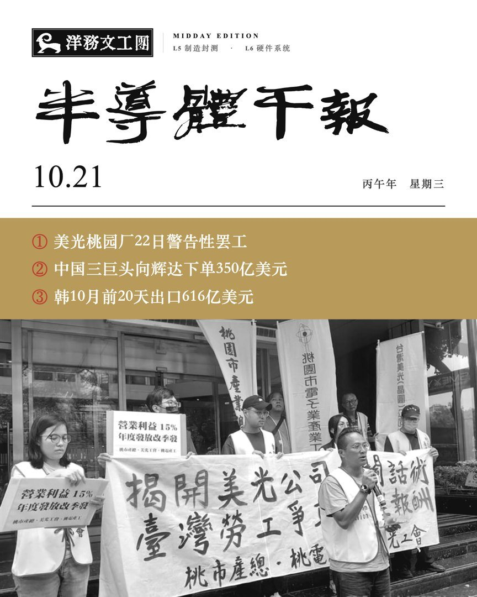
10.21 午报封面
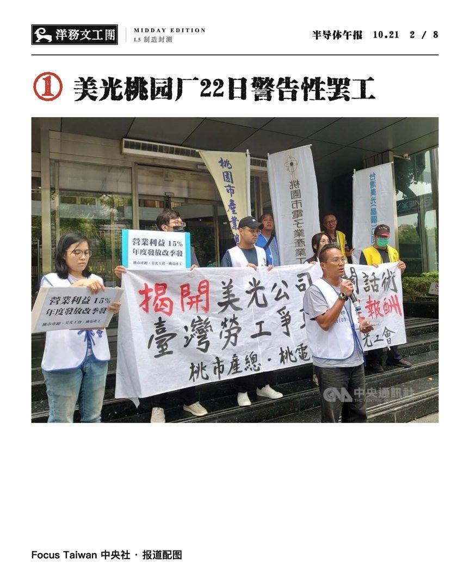
① 图美光罢工
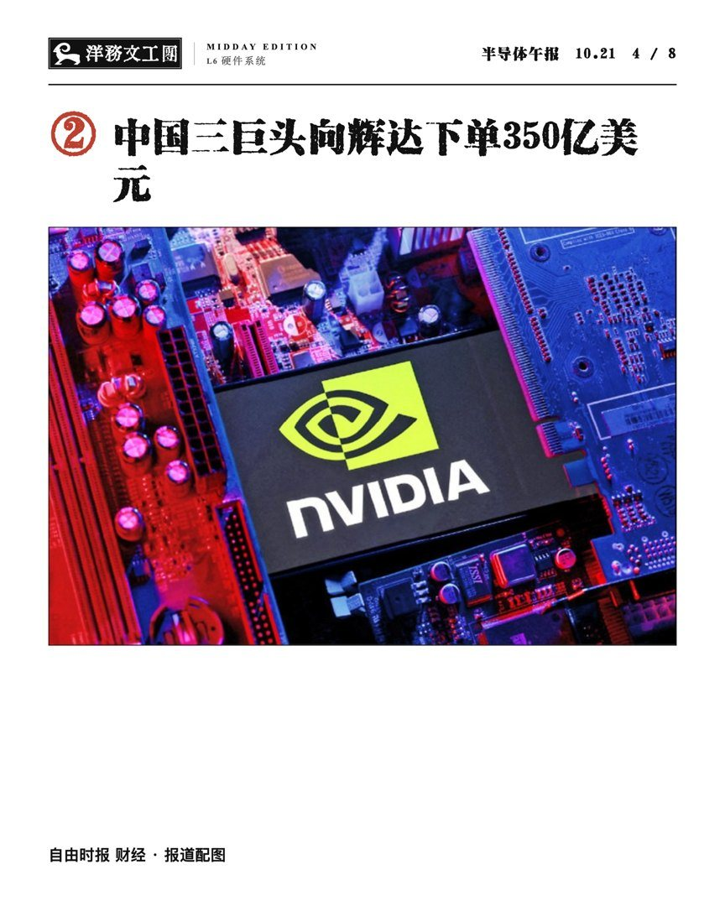
② 图英伟达订单
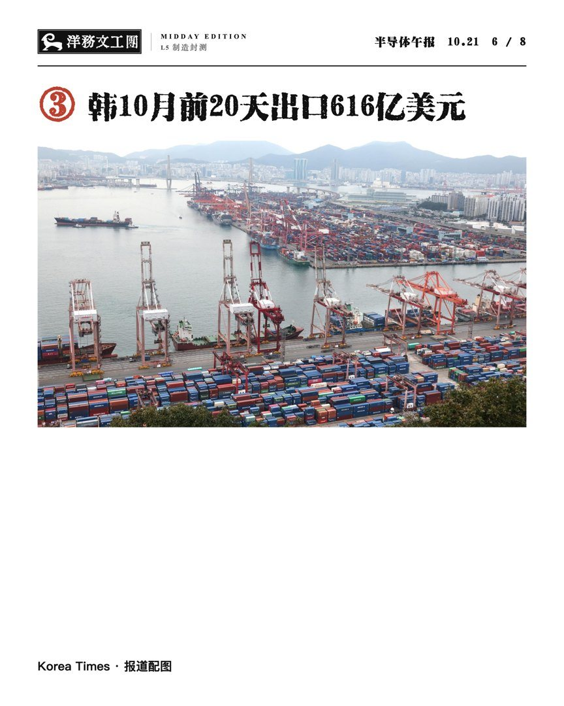
③ 图韩国出口
IMAGES · 自动选图
先按尺寸、比例筛，再让模型逐张打 0–3 分：对不对得上、是不是实拍、有没有广告和大段文字。不到 1 分就不配图。
TIERS · 找图顺序
主材料 → 同一件事的其他报道 → 公司官网新闻图 → 维基共享与 Openverse 的 CC 授权图，图注写真实作者与授权。不抓 Google 图片。
COST · 一期
10.21 午报影子刊：8 页，约 5.5 分钟（取材 136 秒，写稿 192 秒），约 $0.05。
19
SEMICONDUCTOR DAILY ZERO-CLICK
11 / 13 · 2026.10.21 20:00
零点击
Zero-click
10 月 21 日下午，我决定当晚的晚报就切换：不留反悔窗口，影子刊出好就直接转成正式的一期，发往个人网站和 X。Telegram 只报结果；发一句 /auto off 就回到手动挑。
切换前，在工作台的副本上彩排了一整期，用时 291 秒。彩排抓到一个问题：核对器不认「三五〇億美元」「五％」这类中文数字和全角符号，把一则正确的稿子拿掉了。修好后三则全部通过。
A full rehearsal on a copy caught one false alarm: the number checker could not read Chinese numerals, and dropped a correct story.
WHEN IT DOES NOT PUBLISH · 什么时候不发
02 离时段开始已超过 3 小时：工作台停了很久才起来，半夜不补发晚报。
04 稿子过不了原有检查。数字对不上材料的那一则拿掉，其余照发。
05 整期出错最多重试 2 次，就停下并通知我，不反复花钱。
DISCLAIMER · 免责声明照实写
BEFORE · 手动期
文字由 AI 辅助生成并经人工校订
自动期没有人逐条看过，这句话不再成立。
AFTER · 自动期
文字由 AI 生成、程序核对数字与来源，未经人工逐条校订
中文文案、声明页和 X 英文声明页同步改。
20
SEMICONDUCTOR DAILY REFLECTION
13 / 13
判断、检验、修正
Judge, test, correct
这套系统最难的部分不是代码，而是把编辑判断写成可以检验的规则：什么叫相关，什么叫同一件事，什么叫重要，什么时候不发。每一条规则都先是一个直觉，然后被真实数据检验、推翻或修正。
作为设计实践，它让我关心的不只是一张图好不好看，而是一个判断能不能被看见、被追问、被改正。
The hard part was not the code but turning editorial judgment into rules that can be tested, and seen, questioned and corrected.
直觉 · INTUITION 检验 · TEST 修正 · CORRECTION 模型可以直接挑新闻、出海报 成品质量不稳 先做人在环里的工作台，每一步看得见、改得了 关键词足够判断相关 漏斗页：美光罢工只得 1 分被漏 由模型判断，日韩文一起读 看标题就能判断 49 条标准答案，误留约 25% 两道关，误留降到约 5% 重要 = 股价会动 真实收盘价：r = 0.15 产业分量 + 关注度 + 意外的编辑标准，股价只当镜子 计划规模大就重要 没有厂址的 Terafab 排第一 意向不按「假如实现」打分 「经人工校订」 自动期没有人逐条看过 照实写「未经人工逐条校订」 核对器认得所有数字 彩排：不认中文数字，误删一则 先换成阿拉伯数字再比对
23